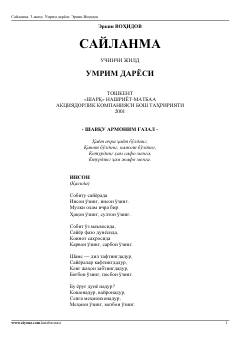

EVErkin Vohidovning teran falsafiy va lirik she'rlari jamlangan uchinchi jild.
O'zbekiston xalq shoiri Erkin Vohidovning ushbu saylanma asarining uchinchi jildi "Umrim daryosi" deb nomlanib, unda muallifning turli yillarda bitilgan sara g'azallari, qasidalari va lirik she'rlari o'rin olgan. Kitobda inson qadri, muhabbat, hayot falsafasi va Vatanga muhabbat mavzulari chuqur badiiy tilda tarannum etilgan. Asar o'zbek mumtoz va zamonaviy adabiyotining yorqin namunalaridan biri hisoblanadi.